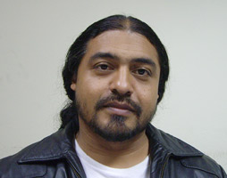

|
|
 |
| Edgar Lanz
|
|

edgaredgardolanz@gmail.com
Telefono: 0414-3027198 / Oficina Notisur 794094
|
|
|
Edgar Lanz |
(San Félix, Estado Bolívar)
Egresado del Conservatorio de Educación Musical
Integral de Ciudad Guayana CEMI. Ingresa al
Instituto Universitario de Estudios Musicales en
la Menciones de Composición con el Maestro Antonio
Mastrogiovanni y Dirección de Orquesta con Sergio
Bernal. Finaliza sus estudios de Composición
con el Maestro Blas Emilio Atehortúa entre
2002-2005. Fundador y egresado de la
Cátedra Latinoamericana de Composición.
Ha realizado cursos y clases magistrales de
Dirección Orquestal, Composición y Análisis con
los maestros Sergio Bernal, Alfredo Rugeles,
Wolfgang Trömmer, Eduardo Marturet, Mario
Benzecry, Sumk Kua, Marlos Nobre, Claude Ballif y
Constin Mireneau.
Es miembro fundador de la Orquesta Sinfónica de
Ciudad Guayana y ex - integrante de la Banda
Sinfónica del Caroní como
Clarinetista. Como Docente ha sido
Profesor del Conservatorio de Ciudad Guayana y
Director de la Escuela de Música del Pao del
Estado Bolívar. Se ha desempeñado como
Profesor en el Sistema de Orquestas Juveniles e
Infantiles de Venezuela en el Conservatorio Simón
Bolívar y el Núcleo La Rinconada.
Actualmente está como Profesor de Lenguaje,
Tallerista y Asistente de Dirección en los Núcleos
Propatria y Carapita.
Sus obras se ha interpretado en las diferentes
orquestas y grupos de cámara del país, tales como
Bumbac estrenado en 2003 por la Orquesta Sinfónica
de Falcón bajo la Dirección de César Iván Lara,
Cuarteto de Cuerdas no, 1 y no. 2 Cuarteto de
Ciudad Guayana y Cuarteto Friedman,
respectivamente, Quinteto de Metales por el
Quinteto del Conservatorio Simón Bolívar, y otras
cosas como Quinteto de Maderas, Seis cuerdas para
guitarra, Viento y mar para Coro mixto, Agridulce
para flauta y guitarra, El Niño y el Pájaro para
Soprano y Piano, entre otras.
Próximamente estrenada su Concierto para Clarinete
y Orquesta y para el primer semestre del 2008, la
Nakupaí, Cantata para Coro Mixto y
Orquesta.
Ha realizado obras para cortometrajes para cine,
de los cuales se puede mencionar "El Reformador"
(2007), bajo dirección del cineasta Héctor Puche,
y "Parque Central", bajo dirección del mismo
cineasta, entre otros.
Paralelamente comparte la actividad musical con la
comunicación social, desempeñándose como
Co-Productor de micros y documentales.
Mantiene una columna en el Semanario "Noticias
Inéditas" y foto-reportero eln la agencia de
noticias internacional "Notisur".
|
|
|